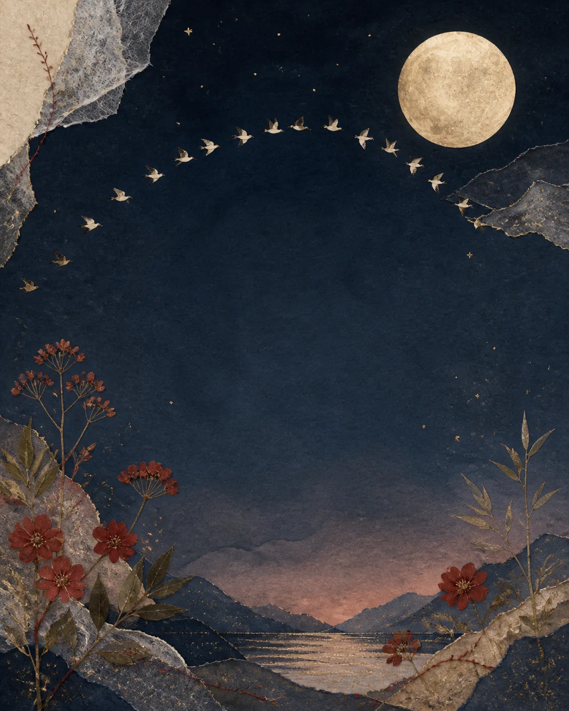
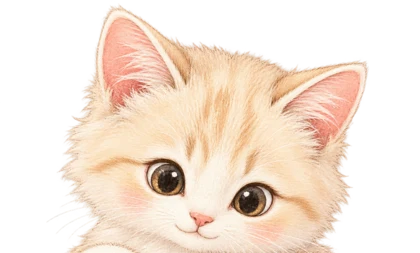
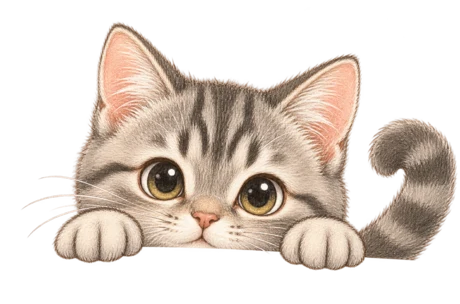
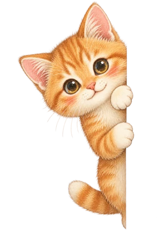

只此一份 · 私人收藏
写给
Cindy
把心意藏进一页页月色里
轻轻翻开
A LITTLE BOOK FOR CINDY


只此一份 · 私人收藏
把心意藏进一页页月色里
轻轻翻开
零壹 · 见字如晤
想把今年的七夕，认真地留下一点痕迹。
不是盛大的烟火，也不是漂亮话的堆叠，只是想告诉你：因为有你，那些原本普通的日子，都有了值得记住的光。
这本小小的手账，写的是今天，也是我想和你一起慢慢写下去的以后。
见字如晤，念念是你。
零贰 · 关于喜欢
想到开心的事情时，想第一个说给你听。
忙碌的一天结束后，还是会想知道你过得好不好。
看见很远的未来，也会下意识地为你留一个位置。
原来“喜欢”不是一个瞬间，
而是每一天都多一点。

零叁 · 我们的浪漫
月亮今天有话要说
浪漫不一定
发生在远方。它也可以是
并肩走过的晚风，
一句记得吃饭，
和每一次好好回应。
山河远阔，人间烟火。
都想和你一起看。
零肆 · 给未来留白
打一场尽兴的羽毛球，让汗水在灯光下闪着光。
找一天去爬山，等天空从深蓝慢慢亮起来。
去徒步丈量没走过的路，也重新走一走熟悉的街道。
窝在沙发里玩双人成行，把并肩闯关的夜晚过成诗。
末页 · 但不是结尾
TO CINDY
谢谢你出现在我的生活里。
往后的很多页，
也想继续和你一起写。
